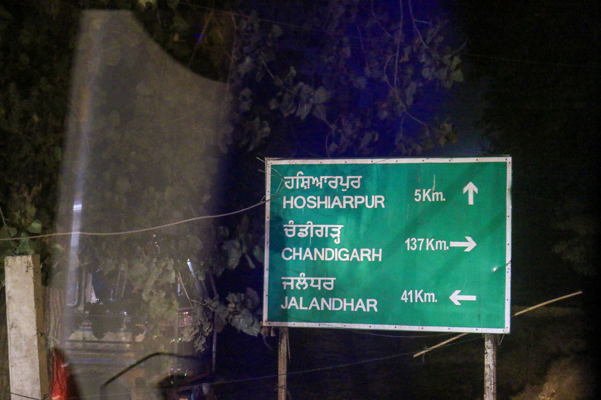

Chapter 9 of 22
The Road to Hoshiarpur and Onward to Qadian

After completing our visit to Ludhiana, we gathered for Zuhr and Asr prayers in congregation and then shared a moment of combined silent supplication, reflecting on the significance of where we had been and the spiritual legacy tied to that sacred site.
As we stepped out of Darul Ba’ait, the police officers who had been escorting us were still waiting patiently, ready to guide us to the outskirts of Ludhiana. Their cheerfulness was infectious, and some of them even took selfies with members of our group. It was a lighthearted and memorable moment.
When we returned to the buses, we were greeted with a delightful surprise: a tiny pizza and a cold drink on each seat. The thoughtful gesture brought a chorus of gratitude as we all exclaimed how wonderful our hosts had been throughout this journey.
On the Road to Hoshiarpur
The police escort guided us smoothly through Ludhiana’s traffic and stayed with us until we reached the city’s outer boundary. From there, we continued our journey on our own, heading towards Hoshiarpur, about 47 miles (75 km) away.
Hoshiarpur, often called the “City of Mangoes,” is famous for its sweet mango orchards and lush greenery. It is one of the oldest inhabited cities in the region, with roots tracing back to the Vedic period. Known for its skilled craftsmen, the city is celebrated for its hand-carved wooden furniture and musical instruments. Its rich cultural and religious diversity is reflected in its many temples, mosques, and gurudwaras.
After about two hours on the road, we arrived at our destination and walked through the narrow streets to reach the historic property.
Arriving at the Historic Property
As we entered the property, we climbed a set of stairs that led to the second floor. At the top, we stepped into an open courtyard bathed in quiet serenity. This space had its own historical significance, as it was here that Hazrat Promised Messiah (as) met with locals either before or after completing his chilla kashi.
To the left of the courtyard was the most important room of all—the one where Hazrat Promised Messiah (as) spent 40 days in solitude, immersed in prayer and devotion. This room held a profound spiritual energy.
During this period of chilla kashi, Hazrat Promised Messiah (as) instructed his companions to leave food outside the door and not to disturb him under any circumstances. This room became the sacred space where he received many divine revelations, including the prophecy of Musleh Maud.
Prayers in the Sacred Room
Standing in this room was a deeply humbling experience. We were blessed to offer Maghrib and Isha prayers in the very place where Hazrat Promised Messiah (as) once stood in complete devotion to Allah. This moment of spiritual connection felt like a bridge across time, linking us directly to the early days of Ahmadiyyat.
A Journey Back in Time
After offering prayers, we stood together in combined silent supplication, thanking Allah for the blessings of this journey and praying for the strength to continue serving His cause.
As we left the property and returned to the buses, the host shared one final reminder of history. We were crossing a river bridge that did not exist during the time of Hazrat Promised Messiah (as). Back then, he used boats to cross this same river—the Beas River. Imagining him traveling over the river in a simple boat made us appreciate even more the sacrifices and perseverance that defined his divine mission.
Yes, it had been a long day. But now, we were just a few minutes from our final destination: Qadian. The excitement was palpable. We were eager to finally quench both our physical hunger and our spiritual thirst.